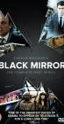

Black Mirror
Stephen Klancher
...has seen 19
...has seen 0.3 hours
...has not seen 0.1 hours

Timeline
Most Recent:
Black Museum
First Unseen:
Striking Vipers (# 20)
...has seen 19
...has seen 0.3 hours
...has not seen 0.1 hours
Timeline
Most Recent:
Black Museum
First Unseen:
Striking Vipers (# 20)
